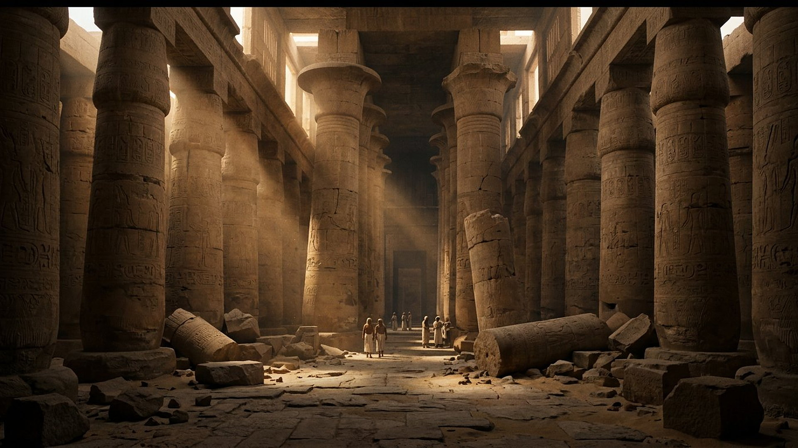
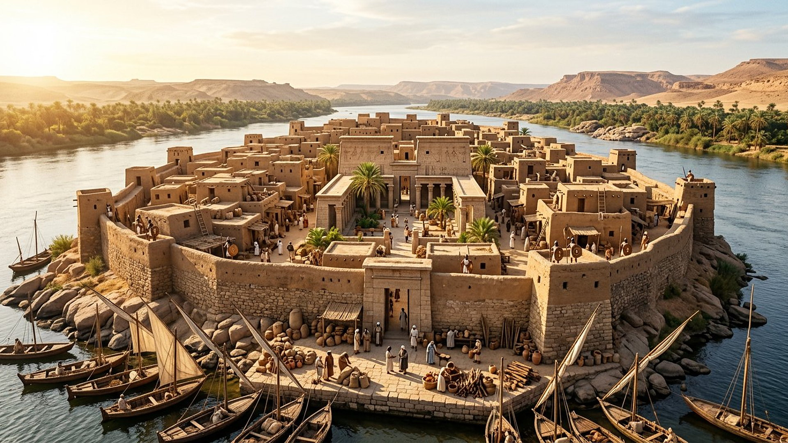

L'Égypte d'Isaïe 19 : « un autel à Jéhovah au milieu du pays »
« En ce jour-là, il y aura un autel à Jéhovah au milieu du pays d'Égypte. » — Isaïe 19:19 (d'après Crampon 1904)
Reconstitution numérique — une ville-temple au bord du Nil.
Un chapitre en deux mouvements
Isaïe 19 est l'un des chapitres les plus étonnants du livre. Il commence comme un jugement : l'Égypte s'effondre de l'intérieur (guerre civile, conseillers aveuglés, Nil qui tarit, économie ruinée, versets 1 à 15). Puis, sans transition, le ton bascule : l'Égypte tremble, se retourne… et finit en bénédiction, au point que Jéhovah dira : « Béni soit l'Égypte, mon peuple » (19:25) — formule que la Bible réserve d'ordinaire à Israël. Entre les deux, cinq fois, revient la même charnière : « En ce jour-là » (19:16, 18, 19, 23, 24). Cette salle suit le chapitre dans son ordre, et étiquette chaque étape : ce qui s'est vu dans l'histoire, ce qui reste ouvert.

Reconstitution numérique — Thèbes après la tempête assyrienne (663).
Le chapitre, étape par étape
Faites avancer le lecteur dans Isaïe 19.
Étape 1 / 5
Deux échos anciens, documentés
FAIT ARCHÉOLOGIQUEÉléphantine, Ve siècle avant notre ère. Sur une île du Nil à la frontière sud de l'Égypte, une garnison judéenne entretenait un petit temple dédié à Jéhovah — nom écrit YHW dans ses papyrus araméens — attesté avant 525 et encore en activité en 411. Sa lettre de 419 règle la fête des pains sans levain de la mi-Nisan ; sa pétition de 407 demande à reconstruire le temple endommagé. Un autel à Jéhovah « au milieu du pays d'Égypte » n'est donc pas une vue de l'esprit : un siècle et demi après Isaïe, il en existait un, au sud du pays.

Reconstitution numérique — la garnison et le petit temple d'Éléphantine, sur le Nil.
DONNÉE HISTORIQUELéontopolis, vers 160 avant notre ère. D'après l'historien Josèphe, le grand prêtre exilé Onias demanda à Ptolémée VI de bâtir en Égypte un temple « comme celui de Jérusalem, en plus petit » — en citant expressément Isaïe 19:19, « six cents ans » après le prophète. Le temple fonctionna plus de deux siècles, jusqu'en 73. La salle présente ce lien pour ce qu'il est : la lecture qu'un prêtre du IIᵉ siècle faisait du texte — un écho revendiqué par les acteurs eux-mêmes, ce qui est déjà un fait historique remarquable, sans que le musée ait à trancher seul la question de l'accomplissement.
Comment lire l'ensemble ?
FAIT ARCHÉOLOGIQUE
Le premier mouvement s'est vu
L'effondrement égyptien des versets 1 à 15 a trouvé un écho massif : conquête assyrienne (Memphis prise en 671, Thèbes pillée en 663, un événement que Nahoum 3 cite encore comme une référence d'horreur), puis des siècles où l'Égypte ne redevient jamais la superpuissance du Nil. Prudence affichée : à Thèbes, aucune couche de destruction nette n'a été relevée ; l'échelle du sac reste débattue. DÉBATTU
LECTURE PROPHÉTIQUE
Des prémices, pas le tableau complet
Éléphantine et Léontopolis montrent un culte de Jéhovah durablement implanté en Égypte — ce que les « cinq villes » et « l'autel au milieu du pays » peuvent évoquer. Mais le tableau final du chapitre (une Égypte qui connaît Jéhovah dans son ensemble, une route ouverte entre Égypte, Assyrie et Israël, trois peuples bénis ensemble) dépasse largement ces prémices : la salle le classe donc encore ouvert.
À VENIR
La route des trois peuples
« En ce jour-là, il y aura une route d'Égypte en Assyrie (…) Béni soit l'Égypte, mon peuple, l'Assyrie, œuvre de mes mains, et Israël, mon héritage » (19:23-25). Aucune date, aucune identification avec des États ou des événements modernes : la salle s'en tient au texte — une réconciliation finale où l'ancien oppresseur et l'ancien opprimé sont bénis côte à côte. C'est l'une des pages les plus universalistes du livre d'Isaïe.
Bienvenue dans la salle consacrée au chapitre 19 du livre d'Isaïe. Ce texte décrit d'abord une Égypte en crise : divisions internes, conseillers en difficulté, fleuve au plus bas. Puis le récit change de ton et évoque un avenir apaisé, avec un lieu de culte au centre du pays et une route reliant trois peuples anciens. Dans cette salle, un lecteur interactif vous fait parcourir le chapitre en cinq étapes. Vous découvrirez aussi deux dossiers documentés : une garnison ancienne stationnée sur une île du Nil, dont les papyrus ont été conservés, et un temple bâti en Égypte plusieurs siècles plus tard. Chaque étape porte une étiquette claire : fait établi, donnée historique, lecture proposée ou point encore débattu.